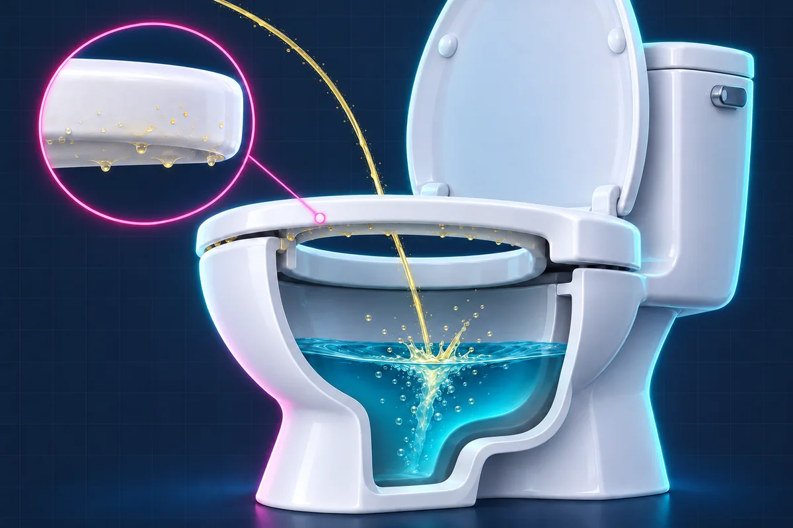

No splash damage
Your bathroom is not a Jackson Pollock installation. Aim assist: activated.
A tiny manifesto for sitting down to pee.
Standing is legal. Sitting is civilized.
Your bathroom is not a Jackson Pollock installation. Aim assist: activated.
For men who have difficulty urinating, sitting can make it easier to empty the bladder. Less urine remains, reducing the risk of urinary tract infections and the inflammation they cause. [1] [2]
The next person should not need forensic footwear. Be the hero in socks.
Your aim can be perfect. The water still splashes.
When pee hits the water, droplets can splash back onto the underside of the seat. Out of sight. Still someone’s problem.
Someone has to lift that seat and scrub it off. Not exactly the highlight of their day.
If nothing else convinced you, think of the person cleaning it.
Be fucking civil. Sit the fuck down.

Tape this near the throne. Technology, finally doing important work.
“Sit the fuck down.”